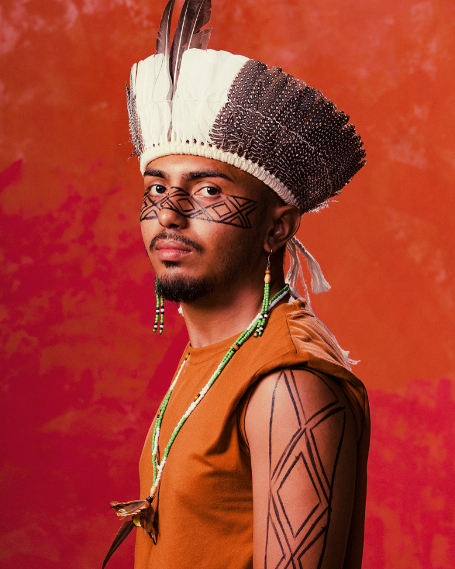

Desenvolvimento Web
Aprendizado de criação de páginas para a web e organização de conteúdo com HTML e CSS.
Graduado em Teatro pelo IFCE Fortaleza e Técnico em Informática para Internet pelo IFSMG Barbacena. Arte-educador, pesquisador de poéticas indígenas e afro-brasileiras, produtor cultural e audiovisual e agente de cultura viva.
Meu nome é Yuapenu Juká Gastino de Paula. Estou aprendendo Programação Web e criando páginas com HTML.

Tecnologias e áreas que estudo e tenho interesse.
Aprendizado de criação de páginas para a web e organização de conteúdo com HTML e CSS.
Resolução de problemas com algoritmos e estruturas de seleção na linguagem Python.
Estudo de organização, modelagem e consulta de dados para aplicações.
Pesquisa e produção artística com interesse em poéticas indígenas e afro-brasileiras.